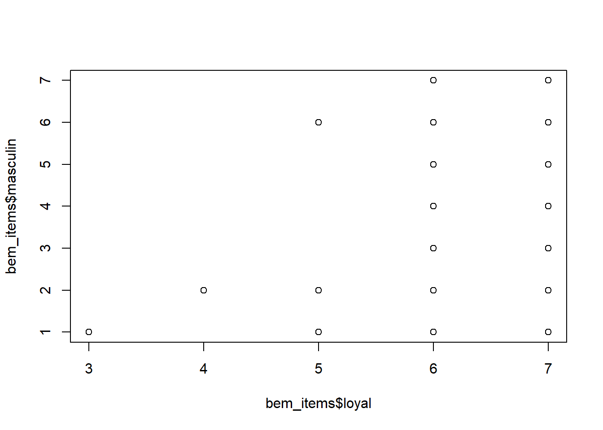
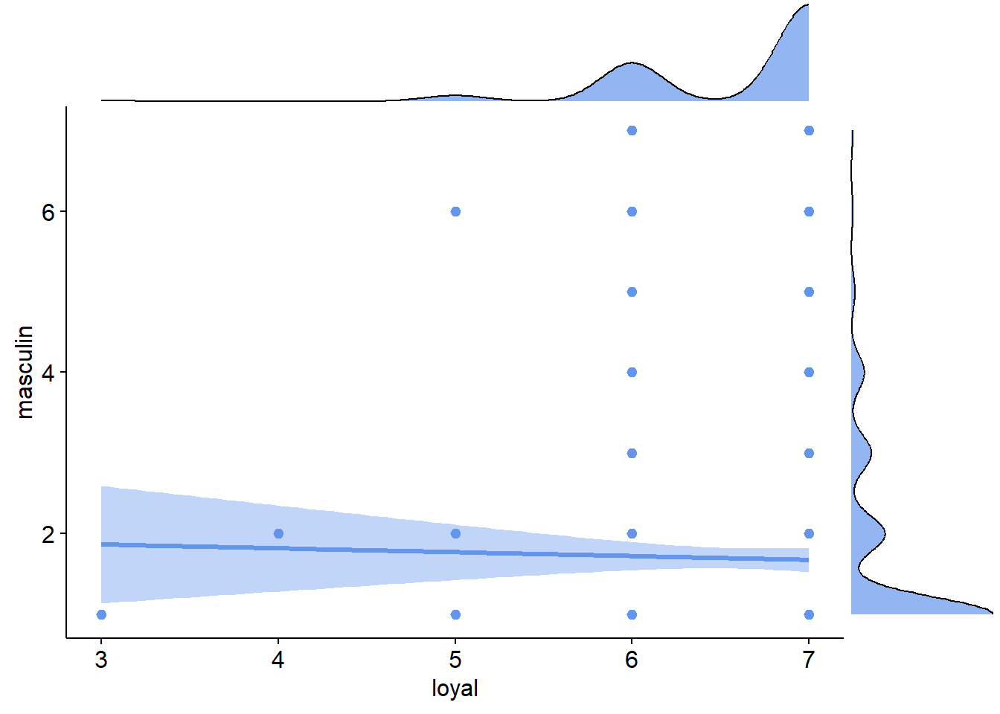
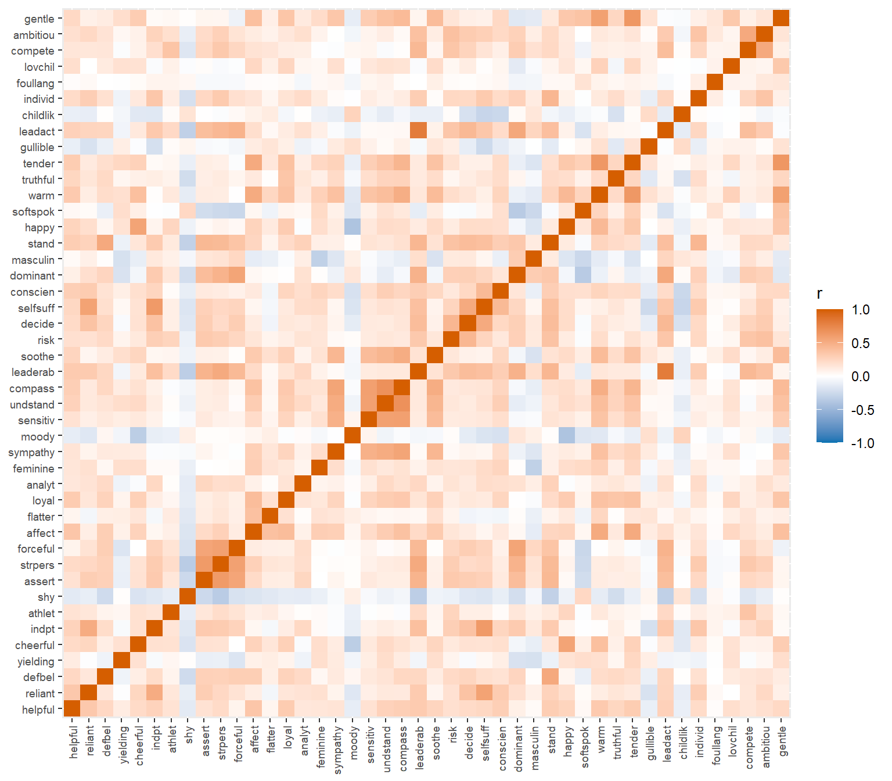
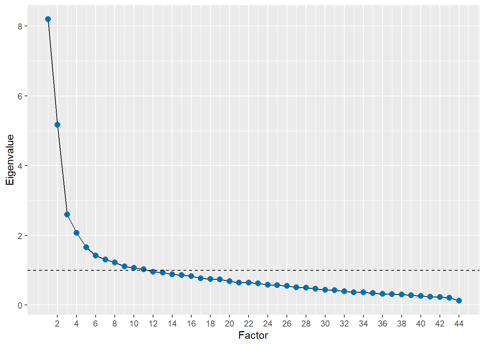

1 - Use RStudio to conduct some basic data screening on the data prior to conducting a factor analysis (FA) or principal components analysis (PCA).
2 - Use RStudio to compute various methods for checking on the factorisability of the correlation matrix entering into an FA or PCA.
3 - Use RStudio to generate a scree plot to allow a visual estimate of the number of factors to retain in a factor analysis.
4 - Use RStudio to try specific extraction and rotation techniques and to select solutions with a given number of extracted factors.
5 - Understand and use the output from a complete factor analysis: for example, to describe the percentage of variance accounted for by the extracted and rotated factors, or to describe the extent to which the variables are well explained by the factors.
Materials Used:
We will use the packages psych, ggplot2, ggpubr, and knitr these are already installed on the RStudio Server but if you are working on your own Laptop you may need to install them.
NoteSome general notes about the weekly labs
You should go through the worksheet during the lab and try to complete as much of it during the lab as you can. You can work on the sheet individually or in small groups during the lab. Try to answer the lab worksheet questions in your own words however. If you are unable to finish the worksheet during the class, try to finish it outside class time. Try to attempt the answer before using the ‘Show Answer’ button.
As you go through the sheet, copy the relevant lines of code to your own analysis script.
A complete model answers script will be available on the VLE page from Fridays after the labs so you can check your own answers.
If you have any queries during the class, please feel free to ask your lab tutors. If your question relates specifically to the lecture content or the homework sheets, please contact Peter Holland by email or use the forum on the VLE page.
CREATE A NEW PROJECT
Just as we did in previous weeks we are going to start by creating a new project for this week’s lab. Download the data from the VLE (In the Week 9 Lab Materials section) and then copy it into the folder you created your project in. You can also find a direct download link for the data here: Github Link.
If you are working on the RStudio Server, then you will need to download the file to your computer and then upload them to the correct folder on the server.
Also create a new script in this folder so you can copy the lines of code needed to run this analysis yourself using just that script.
Given the packages above what code do we need to use to load it?
library(psych) # fa(), fa.parallel(), KMO(), cortest.bartlett(), skew()library(knitr) # kable() for tidy tableslibrary(ggpubr) #this automatically loads the required ggplot2 package
Loading required package: ggplot2
Attaching package: 'ggplot2'
The following objects are masked from 'package:psych':
%+%, alpha
#library(ggplot2) # plots
As you will have seen from the answer scripts from previous homeworks and labs it is good to do this at the top of your script instead of just before you use each package.
SECTION A. THE DATASET
This dataset is one of the data sets provided with Tabachnick and Fidell. It contains data from the responses of 369 middle-class, English-speaking women who completed the Bem Sex Roles Inventory. There are 44 items (one item from the original battery was omitted by mistake), 19 that reflect the stereotypical masculine sex role, 20 that reflect the feminine role, and 5 social desirability items. These items are all rated on a scale from 1 (never or almost never true of me) to 7 (always or almost always true of me). The other variables are subno (subject number), mah_1 (the Mahalanobis distance for the 44 items, computed to screen for multivariate outliers), and include (= 1 if NOT a multivariate outlier; 0 if it is a multivariate outlier).
All survey item variables are ordinal but treated as continuous, but include can be treated as a categorical (nominal) variable.
First we load the data as usual, notice that this time we’ve called the loaded data bem, you can use any name you want but remember to alter later code to match this:
bem <-read.csv("bemData.csv")dim(bem) # 369 rows (women), 47 columnshead(bem[, 1:8])
We will also make a vector holding the names of the 44 items, so that we can easily select just those columns later. (Every column except subno, mah_1 and include is an item.)
items <-setdiff(names(bem), c("subno", "mah_1", "include"))length(items) # should be 44
[1] 44
SECTION B. ASSUMPTION CHECKS
How many multivariate outliers are there?
The easiest way to find out is to make a frequency table of the include variable.
table(bem$include)
0 1
25 344
We can see here that 25 have been labelled as multivariate outliers (with an include code of 0).
Now we want to create a clean data set without the cases identified as multivariate outliers by an earlier analysis, by keeping only the rows where include == 1.
How would you perform this using code? Once you have removed the outliers and created a second dataframe also create a third dataframe that only includes the data with the items in HINT: Look at the Week 2 data screening/cleaning lab code where we performed something similar.
The easiest way to do this is to use the subset() function, this can be used to both select certain rows of data as well as certain columns (by using the select = input argument)
bem_clean <-subset(bem, include ==1)nrow(bem_clean) # 344 women remain
[1] 344
bem_items <-subset(bem_clean, select = items)dim(bem_items) #344 rows and 44 columns
[1] 344 44
Before we run the factor analysis we should check on the nature of some of the variables to be used and their relationships, by visual means.
Create a scatterplot to check out visually the linearity of the relationship between ratings of loyalty (loyal) and masculinity (masculin). Of all the pairs of variables we could have chosen, note that these are plotted because they each exhibit strong skewness, but in opposing directions.
The simplest way to do this is in base R:
plot(bem_items$loyal,bem_items$masculin)

However, if we look at the week 3 lab we can see a nicer way using compound plots using ggpubr::scatterhist()
ggscatterhist(bem_items, x ="loyal", y ="masculin",add ="reg.line",conf.int =TRUE, color ="cornflowerblue",margin.params =list(fill ="cornflowerblue"))

Is the relationship linear? Also examine the skewness values for these two variables? What else do you notice? Do you think that this is a problem for a factor analysis?
For linearity, it is quite hard to tell, especially as the data only have a limited range of values so all cluster onto the same dots. This is typical of questionnaire data that uses Likert scales.
The question of if this is acceptable for a factor analysis is an interesting one. The basis of FA/PCA is the correlation matrix, the issue is that Likert items are ordinal, and Pearson correlations assume interval-level data. With ordinal items the correlations tend to be attenuated, especially when the items are skewed or have few response categories, and this can distort the factor structure. It can produce spurious “difficulty factors”, where items cluster by skewness rather than by content. However, it’s very common and generally accepted. Most personality questionnaires, including the Bem, are factor analysed this way. However, if you have fewer than 5 likert levels it becomes more problematic. In that case you can use something called polychoric correlations which can be implemented in the fa() function we will use later. However, this is beyond this course and since we have 7 levels we will stick with the standard approach of Pearson correlations.
Tabachnick and Fidell’s verdict (5th ed., p. 652) is “Although the plot is far from pleasing and shows departure from linearity as well as the possibility of outliers, there is no evidence of true curvilinearity”
In terms of skewness values:
skew(bem_clean$masculin)
[1] 2.008132
skew(bem_clean$loyal)
[1] -2.022386
Is it homoscedastic?
Again, it is hard to tell; as well as the limited range of values, the skew of both variables makes interpretation difficult.
We might have considered transformations, but in this case we will not. (One reason, as Tabachnick and Fidell point out, is that these items constitute a published scale which is already in use.)
Is there any data missing for the items in this dataset?
is.na() marks each missing value as TRUE. Summing these counts them up (TRUE counts as 1).
sum(is.na(bem_items)) # total number of missing values across all 44 items
[1] 0
any(colSums(is.na(bem_items)) >0) # does ANY item have missing data?
[1] FALSE
So we have no missing data in the data set.
Is there any evidence for potential multicollinearity in the bivariate correlations?
To check for potential multicollinearity we can run a bivariate correlation matrix for the 44 items we will include in the FA.
r <-cor(bem_items) # 44 x 44 correlation matrixdim(r)
[1] 44 44
However, printing an entire 44x44 matrix is hard to read, so we can take a look at only the top left corner:
round(r[1:5, 1:5], 2) # a peek at the top-left corner (printing all 44 columns is unwieldy)
Nothing looks problematically high here but if we want to summarise the full matrix and get the minimum and maximum we could try this:
range(r)
[1] -0.402102 1.000000
This works for the minimum but since the diagonal of the matrix contains ones we can’t see the maximum properly. The code below extracts the elements below the diagonal of r (the lower triangle) and gets the range on those:
r_off <- r[lower.tri(r)] # each pair of items once, without the diagonalrange(r_off)
[1] -0.4021020 0.8182271
We can now see that we do have some high correlations but not exceeding the r = 0.9, threshold.
We can also create a heatplot of the correlations which is a very good way to visually summarise them all, this is similar to what was shown in the lecture:
r_long <-as.data.frame(as.table(r)) # one row per pair of itemsnames(r_long) <-c("item1", "item2", "r")ggplot(r_long, aes(x = item1, y = item2, fill = r)) +geom_tile() +scale_fill_gradient2(low ="#0072B2", mid ="white", high ="#D55E00",limits =c(-1, 1)) +labs(x =NULL, y =NULL, fill ="r") +theme(axis.text.x =element_text(angle =90, hjust =1, vjust =0.5, size =7),axis.text.y =element_text(size =7))

Heatmap of the correlations between the 44 items.
SECTION C. FACTORISABILITY
Before we run the factor analysis we need to check on the factorisability of the correlation matrix.
There are several tests we can consider as part of checking the factorisability of the correlation matrix.
First, there need to be some correlations in the observed correlation matrix which exceed 0.3 (although this does not guarantee factorisability). You can check this using the correlation matrix you produced above.
We can also calculate Bartlett’s test of sphericity (which, if significant, shows that some correlations in the original matrix are significantly greater than 0, but is too sensitive to use in general with large sample sizes like here).
The Kaiser-Meyer-Olkin Measure of Sampling Adequacy (MSA) for individual items and for the overall solution.
How many of the correlations exceed the 0.3 level?
Remember that here we need to find correlations that are either r > 0.3 or r < -0.3 so we will use the abs() function to ask for absolute values. We can also use the r_off variable we created earlier that only contains the lower triangle of the correlation matrix so we aren’t counting correlations twice.
# 1. How many of the 946 pairs of items correlate above .3?sum(abs(r_off) > .3)
[1] 135
length(r_off)
[1] 946
We can see that 135 of the 946 correlations exceed the 0.3 level.
Here is how to perform Bartlett’s test of sphericity
# 2. Bartlett's test of sphericity (it needs the correlation matrix and the sample size)bart <-cortest.bartlett(r, n =nrow(bem_items))bart
$chisq
[1] 5979.188
$p.value
[1] 0
$df
[1] 946
You can read the raw output above but the code below turns it into a prettier table.
bart_table <-data.frame(`Chi-square`=round(bart$chisq, 2),df = bart$df,p =ifelse(bart$p.value < .001, "< .001", sprintf("%.3f", bart$p.value)),check.names =FALSE)kable(bart_table, align ="ccc", caption ="Bartlett test of sphericity")
Bartlett test of sphericity
Chi-square
df
p
5979.19
946
< .001
Here is how to perform the Kaiser-Meyer-Olkin MSA test.
# 3. Kaiser-Meyer-Olkin MSA: overall, and for each itemkmo <-KMO(bem_items)round(kmo$MSA, 2) # overall MSA
[1] 0.85
round(sort(kmo$MSAi), 2) # MSA for each individual item (smallest first)
Some correlations are > .3 (135 of the 946 pairs of items).
Bartlett’s test is significant (p < .001) - although, as noted, this is oversensitive so is of limited help.
The overall Kaiser-Meyer-Olkin MSA is 0.85.
The MSAs for all individual variables are > .6 (the smallest is 0.65).
SECTION D. NUMBER OF FACTORS
We are now going to run a principal axis factoring analysis and use some different methods to help determine the number of factors we should retain. First we use parallel analysis, and then draw a scree plot.
fa.parallel() does the parallel analysis. We ask for fm = "pa" (principal axis factoring) and fa = "fa" (factors, rather than components). plot = FALSE stops it drawing its own plot, because we will draw our own below.
set.seed(2024) # the simulated data are random - this keeps the results reproducible across students and this work sheet. You wouldn't normally include thispa <-fa.parallel(bem_items, fm ="pa", fa ="fa", n.iter =100, plot =FALSE)
Parallel analysis suggests that the number of factors = 6 and the number of components = NA
pa$nfact # number of factors suggested by the parallel analysis
[1] 6
Here is the code we can use to create the parallel analysis scree plot:
Scree plot with parallel analysis: eigenvalues from the real data and from simulated random data.
What does a parallel analysis involve, and what number of factors should be retained on the basis of the parallel analysis?
A parallel analysis involves simulating a dataset with the same number of participants and variables (but with no real relationships between the variables), and calculating the eigenvalues from this simulated dataset. We then compare the eigenvalues from our real dataset with those from the simulated dataset. We stop retaining factors at the first point where a simulated eigenvalue is larger than a real eigenvalue.
In this case, the parallel analysis suggests we retain 6 factors.
We can also use other methods for determining the number of factors to use. The eigenvalues greater than 1 rule (Kaiser’s criterion) retains every factor whose eigenvalue is above 1.
Why can’t we simply use the scree plot created above and look for values greater than 1?
This is because the eigenvalues plotted above come from the output of the factor analysis which is created from the reduced correlation matrix with SMCs on the diagonal. The Kaiser rule is based around eigenvalues generated from the full correlation matrix, as would be used for a PCA.
Here is the correct scree plot with a horizontal line marked at 1:
ev_full <-eigen(r)$values # eigenvalues of the full correlation matrixscree_data <-data.frame(factor =1:n_eig, eigenvalue = ev_full)ggplot(scree_data, aes(x = factor, y = eigenvalue)) +geom_line() +geom_point(size =2.5, colour ="#0072B2") +geom_hline(yintercept =1, linetype ="dashed") +scale_x_continuous(breaks =seq(2, 44, 2)) +labs(x ="Factor", y ="Eigenvalue")

sum(ev_full >1) # how many eigenvalues are greater than 1?
Using this option, how many factors are retained? Where is the point of inflexion on the scree plot?
11 factors are retained using the eigenvalues greater than 1 rule. The point of inflexion is a little difficult to determine in this scree plot; you can probably make a reasonable case for anywhere between 2-6 factors.
This is a good example of how the Kaiser rule tends to over extract factors.
(In their analysis of this dataset, Tabachnick and Fidell try out solutions with 4-6 factors to see which is most interpretable; this can be another useful approach.)
Tabachnick and Fidell go into detail about why they decide on an orthogonal solution with four factors for this dataset. Briefly, their reasoning is as follows:
the scree plot suggests 4-6 factors;
previous research suggests 3-5 factors;
trial runs with differing numbers of factors suggest that a solution with 4 factors is the most interpretable;
in an oblique rotation with 4 factors, the highest correlation between factors is .299; this is borderline but they choose an orthogonal rotation for simplicity.
We will continue with an orthogonal rotation with 4 factors. However, feel free to try some of their analyses out yourself.
SECTION E. FACTOR ANALYSIS
Next run a factor analysis with principal axis factoring (fm = "pa"), 4 factors (nfactors = 4) and an orthogonal rotation (rotate = "varimax").
fit <-fa(bem_items, nfactors =4, fm ="pa", rotate ="varimax")
fa() orders the factors by the variance they explain, but keeps the labels PA1-PA4 from before rotation, so they can appear out of order (PA1, PA4, PA2, PA3). We relabel them 1-4 in the order they now appear. Then print the loadings matrix:
loadings_mat <-unclass(fit$loadings) # items x factors matrix of loadingscolnames(loadings_mat) <-paste("Factor", 1:4)# Print the rotated loadings (all of them, rounded to 2 decimal places)round(loadings_mat, 2)
The matrix above shows every loading. To make the pattern easier to read, we can blank out the small ones. The fit object also contains the uniqueness values in fit$uniquenesses so we can append these to the table:
cutoff <-0.4# change this to see how the pattern changes with a different cut-offloadings_shown <-round(loadings_mat, 2)loadings_shown[abs(loadings_shown) < cutoff] <-NA# Add the uniqueness (see Q9) and printloadings_table <-data.frame(loadings_shown, Uniqueness =round(fit$uniquenesses, 2), check.names =FALSE)options(knitr.kable.NA ="")kable(loadings_table)
Factor 1
Factor 2
Factor 3
Factor 4
Uniqueness
helpful
0.72
reliant
0.48
0.60
defbel
0.41
0.75
yielding
0.85
cheerful
0.56
0.64
indpt
0.47
0.48
0.55
athlet
0.82
shy
0.84
assert
0.64
0.56
strpers
0.71
0.48
forceful
0.65
0.54
affect
0.40
0.52
flatter
0.80
loyal
0.71
analyt
0.84
feminine
0.84
sympathy
0.65
0.56
moody
0.73
sensitiv
0.66
0.56
undstand
0.73
0.42
compass
0.81
0.32
leaderab
0.74
0.42
soothe
0.54
0.61
risk
0.49
0.72
decide
0.48
0.62
selfsuff
0.42
0.66
0.36
conscien
0.41
0.65
dominant
0.68
0.46
masculin
0.80
stand
0.59
0.56
happy
0.64
0.56
softspok
0.72
warm
0.48
0.60
0.37
truthful
0.83
tender
0.44
0.55
0.47
gullible
-0.45
0.78
leadact
0.73
0.46
childlik
-0.42
0.81
individ
0.43
0.76
foullang
0.98
lovchil
0.86
compete
0.54
0.66
ambitiou
0.46
0.74
gentle
0.44
0.56
0.49
How many uniqueness values are high (above 0.8)?
First, check out the uniqueness values (the last column of the table above). We round them to 2 decimal places, as in the table, before comparing with 0.8.
uniq <-round(fit$uniquenesses, 2)sort(uniq[uniq >=0.8], decreasing =TRUE) # items at or above 0.8
9 (there are also an additional 2 items that have values of exactly 0.80).
Why are those items potentially problematic in the factor solution?
The uniqueness values for each of the items reflect the unique variance in each variable not accounted for by the factors extracted in the solution. This is calculated as 1 - communality, where the communality is the sum of the squared loadings across each row. In other words, low communalities (or high uniqueness) mean the variable is not very well accounted for by the factor solution.
Here foullang has a uniqueness of 0.98 and the lowest KMO (0.65), so it is a candidate for removal and re-running the analysis without it. However, we will keep it here as this is a established scale.
We can check this relationship for ourselves: the communality of an item is the sum of its squared loadings, and uniqueness is 1 minus that.
# Check for one item, "foullang" (the item with the highest uniqueness)sum(loadings_mat["foullang", ]^2) # communality = sum of squared loadings across the row
[1] 0.0242729
1-sum(loadings_mat["foullang", ]^2) # uniqueness
[1] 0.9757271
fit$uniquenesses["foullang"] # same value, as reported by fa()
foullang
0.9757271
How many complex variables are there, i.e. ones with loadings (above the chosen cutoff) on more than one factor? Which variables are they and which factors do they load on?
Look at the rotated factor loading table above. We can also find complex variables with code: for each item, count how many factors it loads on at or above the cut-off. NOTE: if you changed the cutoff value in the code above then your answer will be different.
#create a rounded to 2 dp version so that this matches the table shownloadings_r <-round(loadings_mat, 2) # keep loadings_mat unrounded for the communality checkn_loadings <-rowSums(abs(loadings_r) >= cutoff) # how many factors each item loads oncomplex_items <-names(n_loadings)[n_loadings >1]complex_items
[1] "indpt" "selfsuff" "warm" "tender" "gentle"
# Show their loadings on every factor (blank = below the cut-off)kable(loadings_table[complex_items, 1:4])
Factor 1
Factor 2
Factor 3
Factor 4
indpt
0.47
0.48
selfsuff
0.42
0.66
warm
0.48
0.60
tender
0.44
0.55
gentle
0.44
0.56
options(knitr.kable.NA ="")
With a cut-off of 0.4, the complex variables are indpt, selfsuff, warm, tender, gentle (5 items). The clearest two, which have substantial loadings of > 0.45 on two factors, are:
Warm loads onto factors 2 and 3
Independent loads onto factors 1 and 4
(The others are tender and gentle (factors 2 and 3), and self-sufficient (factors 1 and 4).) Note that the number of complex variables depends on the cut-off chosen: with a lower cut-off, such as .3, more items would count as complex.
Write your suggested factor labels
Look at the variables which load on each factor. List the items that load on each factor (at or above the cut-off) to help you come up with a label.
We can do this with code as well:
#will use loadings_r (rounded to 2dp version so it matches the table above) `affect` has a loading of 0.3953 so if using raw loadings would not be included but as the table is rounded it is included.for (f in1:4) { keep <-abs(loadings_r[, f]) >= cutoffcat("Factor", f, ":", paste(names(which(keep)), collapse =", "), "\n\n")}
Also notice that gullible and childlik are the opposite of the factor name of Independence, we can also see from the loadings table that they load negatively onto this factor.
Notes:
Notice that the names need to be of things that constitute variables that can be given a score. For example, you can have a score on independence, but not on “independent”.
If you re-ran the analysis but failed to filter cases (include = 0), the rotation would have been slightly different, so factors 2 and 3 would be swapped over.
After rotation, what is the total variance explained by the 4 factors? And which rotated factor explained the largest amount of variance (and how much)?
The variance explained by each rotated factor is in the Vaccounted table of the fa() output.
Total: 35.62% (the final value in the Cumulative Var row).
The largest % of variance is explained by factor 1: 13.72%.
The proportion of covariance (Proportion Explained in the table) is the (Rotation) Sum of Squared Loadings for each factor, divided by the total Sum of Squared Loadings. It is therefore also equal to the proportion of variance in the solution accounted for by that factor. That is why the cumulative covariance (Cumulative Proportion in the table) by the time we include factor 4 is 100%.